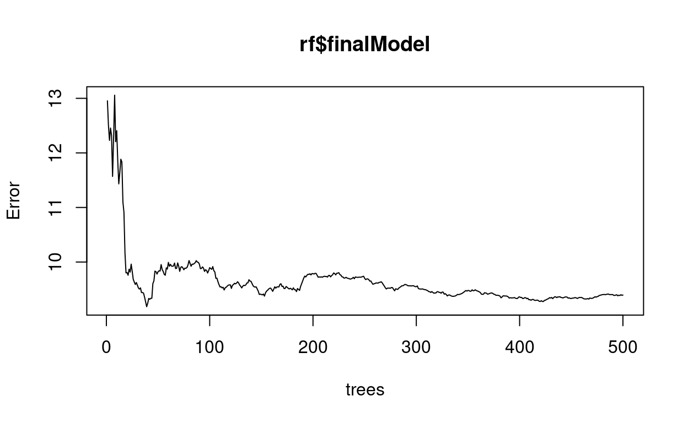

library(mlbench)
library(foreach)
library(randomForest)
library(rpart)
library(caret)In this notebook, we use the Boston Housing data set (again). “This dataset contains information collected by the U.S Census Service concerning housing in the area of Boston Mass. It was obtained from the StatLib archive (http://lib.stat.cmu.edu/datasets/boston), and has been used extensively throughout the literature to benchmark algorithms.”
Source: https://www.cs.toronto.edu/~delve/data/boston/bostonDetail.html
data(BostonHousing2)
names(BostonHousing2)## [1] "town" "tract" "lon" "lat" "medv" "cmedv" "crim"
## [8] "zn" "indus" "chas" "nox" "rm" "age" "dis"
## [15] "rad" "tax" "ptratio" "b" "lstat"First, we drop some variables that we will not use in the next sections.
BostonHousing2$town <- NULL
BostonHousing2$tract <- NULL
BostonHousing2$cmedv <- NULLNext, we start by splitting the data into a training and test set with sample().
set.seed(3924)
train <- sample(1:nrow(BostonHousing2), 0.8*nrow(BostonHousing2))
boston_train <- BostonHousing2[train,]
boston_test <- BostonHousing2[-train,]To show how Bagging works, we can build our own Bagging model with a foreach loop. In this loop, we first sample \(n\) observations from our training data with replacement. Then, a regression tree is grown using this sample and the test set predictions from this tree are stored in the object y_tbag, respectively.
y_tbag <- foreach(m = 1:100, .combine = cbind) %do% {
rows <- sample(nrow(boston_train), replace = T)
fit <- rpart(medv ~ .,
data = boston_train[rows,],
method = "anova",
cp = 0.001)
predict(fit, newdata = boston_test)
}Lets see how the resulting object y_tbag looks like.
head(y_tbag[,1:5])## result.1 result.2 result.3 result.4 result.5
## 13 19.30000 17.18667 21.11429 19.50667 17.85556
## 19 18.75714 18.18000 15.85714 15.12581 18.80455
## 23 16.60833 14.02692 14.26667 18.47895 17.85556
## 31 15.46000 14.02692 14.26667 15.12581 17.50714
## 34 16.60833 14.02692 14.26667 15.12581 21.60000
## 40 24.71000 22.00909 26.86364 30.75000 24.21852Now we can compare the prediction performance of a single tree (e.g. the first) with the performance of the ensemble (the average of the predictions from all trees).
postResample(y_tbag[,1], boston_test$medv)## RMSE Rsquared MAE
## 5.9861416 0.6773056 3.8122044postResample(rowMeans(y_tbag), boston_test$medv)## RMSE Rsquared MAE
## 4.7448596 0.7930238 2.9462925Seems like averaging over multiple trees helps. To investigate this result, we can summarize the row variances of all test set predictions to get an idea of the variability of the individual tree predictions.
summary(apply(y_tbag,1,var))## Min. 1st Qu. Median Mean 3rd Qu. Max.
## 1.035 3.216 5.105 10.002 8.003 74.136At this point, it might be interesting to see whether linear models also benefit from Bagging. To investigate this, we simply plug a linear regression model into the foreach loop.
y_mbag <- foreach(m = 1:100, .combine = cbind) %do% {
rows <- sample(nrow(boston_train), replace = T)
fit <- lm(medv ~ .,
data = boston_train[rows,])
predict(fit, newdata = boston_test)
}However, Bagging is typically more effective with trees rather than with linear regression. We can check whether this is the case here by again comparing the performance of a single model with the performance of the ensemble.
postResample(y_mbag[,1], boston_test$medv)## RMSE Rsquared MAE
## 5.7469880 0.6963282 3.9685198postResample(rowMeans(y_mbag), boston_test$medv)## RMSE Rsquared MAE
## 5.729043 0.692528 3.983487Again, summarize the row variances.
summary(apply(y_mbag,1,var))## Min. 1st Qu. Median Mean 3rd Qu. Max.
## 0.2192 0.6107 0.8886 1.5654 1.6279 19.1070Although useful for demonstration purposes, we don’t need to program our own loop each time to implement Bagging. The train() function of the caret package can be used to call a variety of supervised learning methods and also offers a number of evaluation approaches. For this, we first specify our evaluation method.
ctrl <- trainControl(method = "cv",
number = 5)Now we can call train(), along with the specification of the model and the evaluation method.
cbag <- train(medv ~ .,
data = boston_train,
method = "treebag",
trControl = ctrl)Return the cross-validation results.
cbag## Bagged CART
##
## 404 samples
## 15 predictor
##
## No pre-processing
## Resampling: Cross-Validated (5 fold)
## Summary of sample sizes: 323, 323, 323, 324, 323
## Resampling results:
##
## RMSE Rsquared MAE
## 3.863151 0.8163422 2.684349Use the model to predict the outcome in the test set.
y_cbag <- predict(cbag, newdata = boston_test)In order to also use random forests for our prediction task, we first specify a set of try-out values for model tuning. For random forest, we primarily have to care about mtry, i.e. the number of features to sample at each split point.
ncols <- ncol(boston_train)
mtrys <- expand.grid(mtry = c(sqrt(ncols)-1,sqrt(ncols),sqrt(ncols)+1))This object can be passed on to train(), along with the specification of the model, and the tuning and prediction method. For random forests, we use rf.
rf <- train(medv ~ .,
data = boston_train,
method = "rf",
trControl = ctrl,
tuneGrid = mtrys)Calling the random forest object lists the results of the tuning process.
rf## Random Forest
##
## 404 samples
## 15 predictor
##
## No pre-processing
## Resampling: Cross-Validated (5 fold)
## Summary of sample sizes: 324, 322, 323, 323, 324
## Resampling results across tuning parameters:
##
## mtry RMSE Rsquared MAE
## 3 3.376822 0.8662776 2.218408
## 4 3.260505 0.8727975 2.144220
## 5 3.135419 0.8823640 2.098363
##
## RMSE was used to select the optimal model using the smallest value.
## The final value used for the model was mtry = 5.On this basis, caret trains the final (optimal) model with the full training data set. Plotting the final model gives us an idea of how the error evolves as more trees are added.
plot(rf$finalModel)
With random forests, the individual trees of the ensemble typically look quite different. To get an idea of the components of the forest, getTree() can be used to list individual trees.
getTree(rf$finalModel, k = 1, labelVar = T)[1:10,]getTree(rf$finalModel, k = 2, labelVar = T)[1:10,]Finally, we predict the outcome in the test set.
y_rf <- predict(rf, newdata = boston_test)Finally, we can compare the prediction performance of the former approaches with the performance of a single decision tree, now fitted on the complete training data. Prepare the regression tree, including pruning based on CV.
tree <- rpart(medv ~ .,
data = boston_train,
method = "anova",
cp = 0.001)
mincp <- tree$cptable[which.min(tree$cptable[,"xerror"]),"CP"]
p_tree <- prune(tree, cp = mincp)
y_tree <- predict(p_tree, newdata = boston_test)Now we can compare the performance of the single tree and the tree ensembles.
postResample(y_tree, boston_test$medv)## RMSE Rsquared MAE
## 5.7001114 0.7002284 3.5812042postResample(y_cbag, boston_test$medv)## RMSE Rsquared MAE
## 5.0898137 0.7643699 3.2775534postResample(y_rf, boston_test$medv)## RMSE Rsquared MAE
## 3.8286153 0.8825687 2.6360681